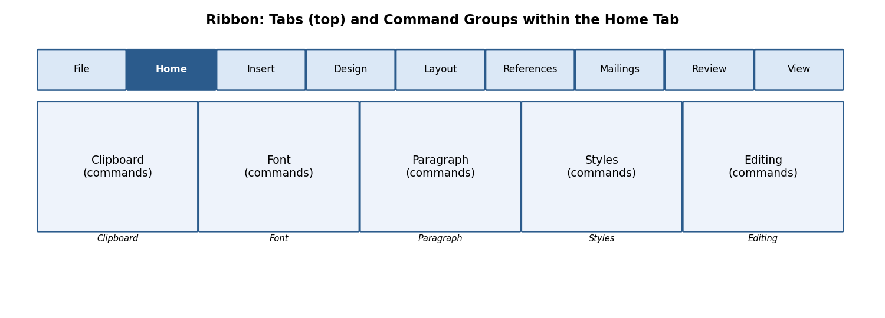

Chapter 1: MS Word Lab¶
अध्याय 1: एमएस-वर्ड
1.1 Introduction to Word and Screen Layout¶
Microsoft Word is a Word Processing System (WPS) — a software application used to compose, edit, format, save and print text-based documents. Unlike a typewriter, a word processor allows unlimited correction, reformatting, and reuse of text before final printing.
माइक्रोसॉफ्ट वर्ड एक 'वर्ड प्रोसेसिंग सिस्टम' है — एक ऐसा सॉफ्टवेयर जिससे पाठ आधारित दस्तावेज़ों को रचना, संपादन (edit), फॉर्मेट, सेव तथा प्रिंट किया जा सकता है। टाइपराइटर के विपरीत, वर्ड प्रोसेसर में अंतिम प्रिंट से पहले असीमित सुधार तथा पुनः प्रारूपण संभव है।

Fig 1.1 — Schematic layout of the MS Word screen
Key parts of the Word screen:
-
Title Bar — shows the file name and application name; contains Minimize, Restore/Maximize and Close buttons on the right.
-
Quick Access Toolbar (QAT) — a customisable strip of frequently-used commands (Save, Undo, Redo) placed above or below the ribbon.
-
Ribbon — a panel of tabs (File, Home, Insert, Design, Layout, References, Mailings, Review, View) each containing groups of related commands shown as icons/buttons.
-
Ruler — horizontal and vertical guides (View → Ruler) used to gauge margins, indents and tab stops.
-
Document Area (Text Area) — the blank workspace where the blinking vertical line, called the Insertion Point (cursor), shows where the next typed character will appear.
-
Scroll Bars — vertical and horizontal bars to move up/down or left/right through a long document.
-
Status Bar — bottom strip showing page number, word count, language, and View/Zoom controls.
1.1.1 Introduction to the Ribbon¶
The Ribbon replaced the old menu-and-toolbar system from Word 2007 onwards. Every command a user needs is visible as a picture-labelled button, organised logically into Tabs → Groups → Commands, so users do not need to search through nested menus.

Fig 1.2 — Ribbon Tabs and Command Groups (Home tab example)
-
Tab — a top-level category, e.g., Home, Insert, Design.
-
Group — a labelled cluster inside a tab, e.g., the 'Font' group inside Home.
-
Dialog Box Launcher — the small diagonal arrow (⤡) at the bottom-right corner of some groups; clicking it opens a full dialog box with more options (e.g., clicking the Font group launcher opens the complete Font dialog box).
-
You can minimise the Ribbon (Ctrl+F1) to gain more screen space for the document, and restore it the same way.
रिबन में सभी कमांड चित्र-चिह्नित बटनों के रूप में टैब → ग्रुप → कमांड के क्रम में व्यवस्थित होते हैं, जिससे उपयोगकर्ता को पुराने मेनू सिस्टम की तरह खोजना नहीं पड़ता।
1.2 Text Basics: Typing and Alignment¶
Typing text: Simply click inside the document area (to place the insertion point) and start typing on the keyboard. Word automatically wraps text to the next line when the current line is full — you should NOT press Enter at the end of every line; press Enter only to start a new paragraph.
Alignment of text (Home tab → Paragraph group) controls how text lines up horizontally with respect to the page margins:
| Alignment | Shortcut Key | Effect |
|---|---|---|
| Left Align | Ctrl+L | Text starts flush with the left margin (default for most documents). |
| Centre Align | Ctrl+E | Text is centred between the left and right margins — used for titles and headings. |
| Right Align | Ctrl+R | Text is flush with the right margin — used for dates or signatures. |
| Justify | Ctrl+J | Text is stretched evenly so both left and right edges are straight — used in newspapers and books. |
पाठ का संरेखण (alignment) यह निर्धारित करता है कि पंक्तियाँ पृष्ठ के हाशियों (margins) के सापेक्ष कैसे व्यवस्थित हों — बायाँ, मध्य, दायाँ अथवा दोनों ओर से समान (justify)।
1.3 Editing Text¶
Editing means modifying text already typed. Before most editing commands can act, the relevant text must first be Selected (highlighted).
-
Select text: click and drag the mouse over the text, OR click at the start and Shift+click at the end, OR double-click a word to select it, OR triple-click a paragraph to select the whole paragraph.
-
Select All — Ctrl+A: selects the entire content of the document in one action (Home tab → Editing group → Select → Select All).
-
Cut — Ctrl+X: removes the selected text/object and places it on the Clipboard (temporary memory) for use elsewhere.
-
Copy — Ctrl+C: duplicates the selected text/object onto the Clipboard while leaving the original in place.
-
Paste — Ctrl+V: inserts the Clipboard's content at the current cursor position. Paste Options (Keep Source Formatting / Merge Formatting / Keep Text Only) appear as a small icon after pasting.
-
Clear (Delete key or Home → Font → Clear Formatting): removes selected text, or strips all character formatting back to the default style, without deleting the text itself.
-
Find (Ctrl+F): opens the Navigation Pane to search for a word or phrase throughout the document, highlighting every match.
-
Replace (Ctrl+H): opens the Find and Replace dialog box, allowing a search term to be substituted — one at a time (Replace) or throughout the document (Replace All).
Example: To correct every occurrence of the misspelling 'recieve' to 'receive' in a 10-page document instantly, press Ctrl+H, type 'recieve' in Find what, type 'receive' in Replace with, and click Replace All.
संपादन (editing) का अर्थ है पहले से टाइप किए गए पाठ में परिवर्तन करना — जैसे काटना (Cut), नक़ल करना (Copy), चिपकाना (Paste), खोजना (Find) और बदलना (Replace)। अधिकांश आदेशों के लिए पहले पाठ को चुनना (select) आवश्यक है।
1.4 File Creating, Saving and Opening¶
These operations (New, Open, Close, Save, Save As) are common to all Office applications and are covered in detail in Chapter 0, Section 0.3. In Word specifically:
-
New (Ctrl+N) opens a blank document, or File → New shows built-in templates (resume, letter, report).
-
Open (Ctrl+O) browses to and loads an existing .docx/.doc file.
-
Save (Ctrl+S) stores changes; Save As (F12) stores under a new name/location/format.
-
Close (Ctrl+W) closes the active document window without closing the Word application itself.
1.5 Formatting Text and Paragraphs¶
Formatting improves readability and visual appeal without changing the actual words. The Home tab → Font group contains most character-level formatting tools:
| Command | Shortcut | Purpose |
|---|---|---|
| Font Size | Ctrl+Shift+> / \< | Increases/decreases the height of characters, measured in points (pt); body text is usually 11-12 pt, headings 14-28 pt. |
| Font Style (Typeface) | — | Changes the design of characters, e.g., Calibri, Times New Roman, Arial. |
| Font Colour | — | Changes the colour of the text via the Font Colour bucket icon. |
| Bold | Ctrl+B | Thickens the strokes of characters for emphasis. |
| Italic | Ctrl+I | Slants characters, often used for titles of books or foreign words. |
| Underline | Ctrl+U | Draws a line beneath the text. |
| Change Case | Shift+F3 | Cycles text between Sentence case, lowercase, UPPERCASE, Capitalize Each Word, and tOGGLE cASE. |
Paragraph-level formatting (Home tab → Paragraph group, or Layout tab → Paragraph group):
-
Line Spacing — the vertical gap between lines within a paragraph (e.g., single, 1.5 lines, double). Set via the Line and Paragraph Spacing icon.
-
Paragraph Spacing — extra space added Before or After a paragraph (Layout tab → Spacing → Before/After), used instead of pressing Enter twice, which keeps spacing consistent throughout the document.
-
Tabs — pressing the Tab key moves the cursor to the next tab stop (default every 0.5 inch); custom tab stops (left, centre, right, decimal, bar) can be set by clicking on the ruler or via Home → Paragraph → dialog launcher → Tabs button.
-
Indents — control how far a paragraph is pushed in from the margin: First Line Indent (only the first line), Hanging Indent (all lines except the first — common in bibliographies), and Left/Right Indent (the whole paragraph).
फॉर्मेटिंग से पठनीयता (readability) व आकर्षकता बढ़ती है। फॉन्ट साइज़, शैली, रंग, बोल्ड, इटैलिक, अंडरलाइन जैसे उपकरण अक्षर-स्तर पर कार्य करते हैं, जबकि लाइन स्पेसिंग, पैराग्राफ स्पेसिंग, टैब्स व इंडेंट पूरे पैराग्राफ के स्वरूप को नियंत्रित करते हैं।
✎ Exercise 1.5 (Practice / अभ्यास)
-
Type a paragraph of at least 5 sentences about your favourite hobby. Apply: Font = Times New Roman, Size = 12, first line indent = 0.5", line spacing = 1.5, and justify alignment.
-
Type the heading 'MY DAILY ROUTINE' and format it as Bold, 18 pt, centred, and in a different colour from the body text.
1.6 Styles and Content¶
A Style is a saved, named set of formatting instructions (font, size, colour, spacing) that can be applied in one click, ensuring consistency throughout a long document. Styles are available in the Home tab → Styles gallery.
-
Using Built-in Styles: select text and click a style thumbnail (Normal, Heading 1, Heading 2, Title, Quote, etc.) in the Styles gallery.
-
Modifying a Style: right-click a style in the gallery → Modify → change font/size/colour/spacing → click OK; every place that style is used updates automatically.
-
Creating a New Style: format a piece of text exactly as desired, select it, open the Styles pane (Ctrl+Alt+Shift+S), click New Style, give it a name, and click OK.
-
Creating a List Style: in the Styles pane, choose New Style → Style type: List, then define the numbering/bullet format that will repeat consistently wherever the style is applied.
Table of Contents (TOC) and References:
-
Apply Heading 1 / Heading 2 styles to all chapter and section titles throughout the document.
-
Click at the location where the TOC should appear (usually right after the title page).
-
Go to References tab → Table of Contents → choose an Automatic Table style.
-
Word scans the document for headings and builds a clickable, page-numbered TOC automatically.
-
If content is added or removed later, click anywhere inside the TOC and press Update Table (or F9) to refresh page numbers.
-
Adding Internal (Cross-) References: References tab → Cross-reference — lets you refer to 'see Figure 3' or 'see Table 2' so the number updates automatically if the figure is moved.
-
Adding a Footnote (References tab → Insert Footnote, or Alt+Ctrl+F): places a small superscript number in the text and a corresponding note at the BOTTOM of the same page — used for citations or brief clarifications.
-
Adding an Endnote (References tab → Insert Endnote, or Alt+Ctrl+D): similar to a footnote, but all notes collect together at the END of the document/section instead of the page bottom.
स्टाइल (Style) फॉर्मेटिंग का एक सुरक्षित नामित समूह है, जिसे एक क्लिक में लागू किया जा सकता है। हैडिंग स्टाइल का उपयोग करने पर 'Table of Contents' (विषय-सूची) स्वतः तैयार हो जाती है। फ़ुटनोट पृष्ठ के नीचे तथा एंडनोट दस्तावेज़ के अंत में दिखाई देते हैं।
1.7 Bullets and Numbered Lists¶
Lists organise related items for clarity. Home tab → Paragraph group offers three list buttons: Bullets, Numbering, and Multilevel List.
-
Bulleted List: applies a symbol (•, ○, ■) before each list item — used when the order of items does not matter.
-
Numbered List: applies sequential numbers/letters (1, 2, 3… or a, b, c…) — used when sequence or ranking matters (e.g., steps of a procedure).
-
Multilevel List: combines several levels of numbering/bullets (1, 1.1, 1.1.1…) for outlines, legal documents, and syllabi such as this one — press Tab to demote and Shift+Tab to promote an item to a different level.
-
Customising a List Style: click the drop-down arrow next to Bullets/Numbering → Define New Bullet / Define New Number Format to choose a custom symbol, font, colour, or numbering style (Roman numerals, alphabets, etc.).
✎ Exercise 1.7 (Practice / अभ्यास)
-
Create a numbered list of the 5 subjects you are studying this semester.
-
Create a multilevel list outlining a project report with at least 2 levels, e.g., 1. Introduction, 1.1 Background, 1.2 Objectives, 2. Methodology …
1.8 Working with Objects, Imagery and Graphics¶
The Insert tab lets you enrich a document with non-text elements.
-
Shapes (Insert → Shapes): ready-made geometric outlines (rectangles, arrows, callouts, flowchart symbols) drawn by click-and-drag.
-
Clip Art & Pictures (Insert → Pictures): inserts an image from 'This Device', 'Stock Images', or 'Online Pictures'; once inserted, the Picture Format tab appears for cropping, resizing, applying artistic effects and picture styles/borders.
-
WordArt (Insert → WordArt): inserts stylised, decorative text with preset colour/outline/shadow effects — good for document titles or banners.
-
SmartArt (Insert → SmartArt): inserts a ready-made diagram (list, process, cycle, hierarchy/org-chart, relationship) into which you simply type text — Word automatically arranges shapes and connecting lines.
-
Columns (Layout tab → Columns): splits the page text into 2, 3, or custom vertical columns, like a newspaper.
-
Change the order of objects: right-click an object → Bring Forward / Send Backward / Bring to Front / Send to Back, to control which object appears on top when several overlap.
-
Page Number, Date & Time (Insert tab): automatically inserts and updates the current page number, or today's date/time, at the cursor position.
-
Text Boxes (Insert → Text Box): a movable, resizable frame that can hold independent text anywhere on the page, useful for pull-quotes or labels.
-
Symbols (Insert → Symbol): inserts special characters not on the keyboard, e.g., ©, ±, α, ₹.
-
Chart (Insert → Chart): embeds an editable Excel-linked chart (column, line, pie, etc.) directly inside the Word document.
-
Page Background (Design tab → Page Color / Page Borders / Watermark): adds a background colour, a decorative page border, or faded watermark text (e.g., 'DRAFT' or 'CONFIDENTIAL') behind the main text.
✎ Exercise 1.8 (Practice / अभ्यास)
-
Insert a SmartArt hierarchy diagram showing your college's organisational structure (Principal → HOD → Faculty → Students).
-
Insert a picture, resize it to fit within a paragraph of text with 'Square' text wrapping, and add a caption below it.
-
Add a light watermark reading 'SAMPLE' to a one-page practice document.
1.9 Working with Tables¶

Fig 1.3 — Structure of a table
A Table organises data into a grid of Rows (horizontal) and Columns (vertical); the intersection of a row and a column is called a Cell.
-
Creating & Inserting a Table: Insert tab → Table → drag across the grid to choose the number of rows/columns, or click Insert Table to type exact numbers, or use Draw Table for an irregular table.
-
Table Formatting: click inside the table to reveal the contextual Table Design and Layout tabs.
-
Table Styles (Table Design tab): one-click preset colour/border themes for the whole table.
-
Alignment Options (Layout tab → Alignment group): align text within cells (top-left, centre, bottom-right, etc.) and control text direction.
-
Merge & Split (Layout tab → Merge group): Merge Cells combines two or more selected cells into one (e.g., for a table title spanning several columns); Split Cells divides one cell into several.
-
Manual and Automatic Editing: rows/columns can be added or removed manually (right-click → Insert/Delete), or a table can auto-adjust column width to fit its content (Layout → AutoFit).
-
Use of Tables for Figures and Footnotes: tables are often used 'invisibly' (borders removed) to precisely align a figure with its caption/footnote text below it.
✎ Exercise 1.9 (Practice / अभ्यास)
- Create a 5×4 table listing Roll No., Name, Subject, and Marks for 4 students. Apply a built-in Table Style, merge the top row into one cell for the title 'Mark Sheet', and centre-align all data.
1.10 Borders and Shading¶
-
Page Border (Design tab → Page Borders): places a decorative line, box, shadow, 3-D, or art border around the entire page — useful for certificates and invitations.
-
Shading Text and Paragraph (Home tab → Paragraph → Shading bucket icon): applies a background colour behind selected text or an entire paragraph, e.g., to highlight important notices.
1.11 Header and Footer¶
The Header is the area at the TOP margin and the Footer is the area at the BOTTOM margin of every page — ideal for repeating information like a document title, chapter name, page number, author, or logo.
-
Go to Insert tab → Header (or Footer) → choose a built-in design, or click Edit Header/Footer, or simply double-click the top/bottom margin area of the page.
-
Type or insert content (text, page number, date, picture/logo) — it will repeat automatically on every subsequent page.
-
The Header & Footer Design tab lets you insert objects into the header/footer, such as Page Number (with page X of Y format), Date & Time, and Pictures.
-
Adding a Section Break (Layout tab → Breaks → Section Breaks) before a page allows that section to have a DIFFERENT header/footer (e.g., no page number on the title page, Roman numerals for the preface, and Arabic numerals for the main chapters) — inside Header & Footer Design, toggle off 'Link to Previous' to disconnect it from the earlier section.
-
Click Close Header and Footer (or double-click inside the body text) to return to normal editing.
हैडर पृष्ठ के ऊपरी भाग में तथा फ़ुटर निचले भाग में स्थित होता है, जो प्रत्येक पृष्ठ पर दोहराई जाने वाली जानकारी (जैसे शीर्षक, पृष्ठ संख्या) दिखाने के लिए प्रयुक्त होता है। सेक्शन ब्रेक जोड़कर विभिन्न भागों में भिन्न हैडर/फ़ुटर रखे जा सकते हैं।
1.12 Mail Merge¶

Fig 1.4 — Mail merge process flow
Mail Merge combines a single main document (e.g., an invitation letter) with a list of unique recipient details (names, addresses) to automatically generate many personalised copies — extremely useful for bulk letters, certificates, mailing labels, and envelopes.
-
Start the main document (e.g., an invitation letter) in Word.
-
Go to Mailings tab → Start Mail Merge → choose the output type: Letters, E-mail Messages, Envelopes, Labels, or Directory.
-
Select Recipients: Type a New Address List (fill a small built-in form), or Use an Existing List (browse to and import an Excel file/CSV containing the recipient data), or Choose from Outlook Contacts.
-
Click Insert Merge Field to place placeholders (e.g., «FirstName», «Address») at the desired positions in the letter, wherever personalised data should appear.
-
Click Preview Results to see how the letter looks with actual data substituted for each recipient, one at a time.
-
Set rules for merges (Mailings → Rules) for conditional content, e.g., an 'If…Then…Else' rule to show 'Mr.' or 'Ms.' based on a Gender field.
-
Click Finish & Merge → choose Print Documents (send directly to the printer), Edit Individual Documents (creates one combined file with a separate letter per recipient), or Send E-mail Messages.
-
Merging to Envelopes / Labels follows the same steps but starts by choosing Envelopes/Labels under Start Mail Merge, and selecting the correct envelope/label size.
Example: A college wants to send 200 personalised admit cards. The admit card template is the main document; a Roll No./Name/Exam Centre Excel sheet is the recipient list; mail merge produces 200 individually addressed admit cards in seconds instead of manually typing each one.
मेल मर्ज एक ही मुख्य दस्तावेज़ को प्राप्तकर्ताओं की सूची (जैसे एक्सेल फ़ाइल) से जोड़कर अनेक व्यक्तिगत प्रतियाँ (personalised copies) स्वतः तैयार करता है — जैसे सैकड़ों छात्रों के प्रवेश-पत्र एक साथ बनाना।
✎ Exercise 1.12 (Practice / अभ्यास)
- Create an Excel sheet with columns Name, Course, and RollNo for 5 students. In Word, draft a simple 'Admit Card' letter with merge fields for these three, and complete a mail merge to produce 5 individual admit cards.
1.13 Proofing the Document¶
-
Check Spelling as You Type: Word underlines suspected misspellings with a red wavy line as you type; right-click the word for suggested corrections.
-
Mark Grammar Errors as You Type: grammar/style issues are underlined with a blue/gold wavy line; right-click for suggestions. The full check can also be run via Review tab → Editor / Spelling & Grammar (F7).
-
Setting AutoCorrect Options (File → Options → Proofing → AutoCorrect Options): configure automatic fixes for common typos (e.g., 'teh' → 'the'), automatic capitalisation of the first letter of sentences, and custom text replacements you define yourself.
1.14 Printing¶
-
Page Setup (Layout tab → Page Setup group, or dialog launcher): configure Margins (space between text and paper edge), Orientation (Portrait/Landscape), and Size (A4, Letter, Legal).
-
Setting Margins: choose a preset (Normal 1", Narrow 0.5", Wide) or click Custom Margins to type exact top/bottom/left/right values.
-
Print Preview: File tab → Print shows a live preview pane on the right, alongside settings for number of copies, specific page ranges, one-sided/two-sided printing, and which printer to use.
-
Print (Ctrl+P): sends the document to the selected printer once all settings are confirmed.
1.15 Making Documents Attractive, Useful and Easy to Read¶
Beyond simply knowing the commands, a good document design follows some universal principles:
-
Consistency: use the same font family (usually just one for body text, one for headings) and consistent heading styles throughout.
-
White space: leave adequate margins and paragraph spacing; do not cram text edge-to-edge — this improves readability.
-
Visual hierarchy: larger/bolder text for titles, medium for sub-headings, and normal for body text helps the reader scan the document quickly.
-
Use of lists and tables: converting long comma-separated sentences into bullet points or a table makes information easier to compare and remember.
-
Meaningful headings and a Table of Contents make long documents (like a project report or thesis) navigable.
-
Alt Text for images (right-click picture → Edit Alt Text): improves accessibility for visually impaired readers using screen readers, and is good practice for all professional documents.
-
Proofread before sharing: always run spelling/grammar check and read the document once fully before printing or emailing it.
एक अच्छा दस्तावेज़ बनाने के लिए संगति (consistency), उचित रिक्त स्थान (white space), दृश्य पदानुक्रम (visual hierarchy), सूचियों व तालिकाओं का उपयोग, तथा भेजने से पहले प्रूफ़रीड करना — ये सभी सिद्धांत दस्तावेज़ को आकर्षक, उपयोगी व सुगम बनाते हैं।
1.16 Worked Walkthrough: Formatting a Formal Leave Application Letter¶
This walkthrough ties together many commands covered above into a single realistic task — drafting a formal leave-application letter to the Head of Department (HOD).
-
Open a New blank document (Ctrl+N). Set the page margins to Normal (Layout tab → Margins → Normal).
-
Type today's date at the top, then press Enter twice, and Right-align (Ctrl+R) just the date line.
-
Return to Left alignment (Ctrl+L) and type the recipient's designation and department, e.g., 'To,\nThe Head of Department,\nDepartment of Computer Science'.
-
Leave one blank line, then type the salutation 'Respected Sir/Madam,' followed by another blank line.
-
Type the body of the letter in 3-4 sentences explaining the reason for leave, the dates, and a request for approval. Justify (Ctrl+J) this paragraph and set Line Spacing to 1.15 for comfortable readability.
-
Leave two blank lines, then type 'Yours sincerely,' followed by blank lines for a signature, and finally the student's name and roll number in Bold.
-
Select the entire letter and set the Font to Times New Roman, Size 12, for a formal appearance.
-
Insert a Footer (Insert → Footer) containing the college name in small, grey, italic text (Font Colour and Size adjusted accordingly).
-
Run Spelling & Grammar Check (F7) and correct any flagged issues.
-
Save As (F12) the file as 'LeaveApplication_\<RollNo>.docx', then use Print Preview to confirm the layout before printing.
This single exercise practises alignment, spacing, font formatting, footers, and proofing all at once — the same workflow pattern (plan → type → format → proof → save → print) applies to almost any real-world Word document, from a resume to a project report.
यह अभ्यास संरेखण, स्पेसिंग, फॉन्ट फॉर्मेटिंग, फ़ुटर तथा प्रूफ़िंग को एक साथ जोड़ता है। योजना बनाना → टाइप करना → फॉर्मेट करना → जाँचना → सहेजना → प्रिंट करना — यही सामान्य प्रक्रिया लगभग किसी भी वास्तविक वर्ड दस्तावेज़ के लिए लागू होती है।
✎ Exercise 1.16 (Practice / अभ्यास)
- Following the walkthrough above, draft your own formal Leave Application letter addressed to your HOD for 3 days of leave, applying every formatting step listed.
1.17 Applications of MS Word¶
-
Academic: assignments, project reports, theses, research papers, question papers.
-
Official/Business: letters, memos, circulars, minutes of meetings, offer letters, contracts.
-
Personal: resumes/CVs, invitation cards, greeting cards, personal letters.
-
Publishing: newsletters, brochures, flyers using columns, WordArt, and page borders.
-
Mass communication: mail-merged letters, certificates, and mailing labels for large groups.
1.18 Limitations of MS Word¶
-
Not ideal for complex numeric calculations or large datasets — Excel is far better suited for that.
-
Very large documents with many embedded high-resolution images can become slow and prone to file corruption.
-
Precise pixel-level page-layout control (as needed in professional graphic design/DTP) is limited compared to dedicated desktop-publishing software like Adobe InDesign.
-
Collaborative real-time co-authoring requires all users to have compatible Office versions or a shared OneDrive/SharePoint account.
-
Automatic formatting (AutoCorrect, AutoFormat) occasionally makes unwanted changes if not configured carefully.